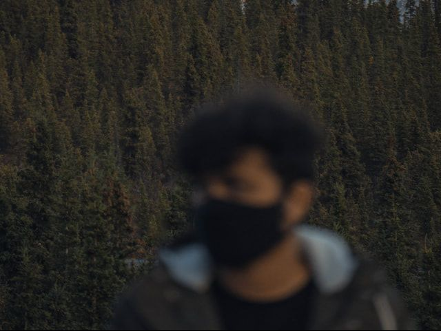

<div class="content">
    <div class="about-entity">
        
        <div class="block">
            <p>Hello! My name is Manoj Malviya, a 28-year-old Computational Design Engineer with a passion for crafting
                innovative solutions and exploring the boundaries of creativity and technology.</p>
            <p>I am deeply inspired by complex engineering problems and love finding ways to solve them through
                advanced computational tools and methodologies. My approach often bridges the digital and physical
                worlds, turning abstract computations into tangible creations using Additive Manufacturing and 3D
                Printing.</p>
            <p>When I’m not immersed in engineering challenges, you’ll find me traveling to remote and fascinating
                places, capturing the beauty of landscapes, cultures, and hidden gems. From childhood adventures
                in the hills of Udaipur to exploring the stunning wilderness of Sweden and New Zealand, travel fuels
                my creativity and perspective.</p>
            <p>In addition to my engineering pursuits, I enjoy expressing myself through music—crafting electronic
                pieces with heavy piano influences—and documenting my journey through photography. Whether it’s
                stunning scenery, memorable encounters, or my love for pizza and coffee, these experiences shape
                both my personal and professional story.</p>
        </div>
    </div>
</div>